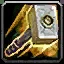
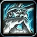
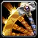
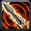
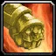
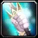
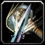
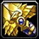
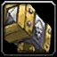

Classes › Paladin › Retribution

Retribution Paladin guide – WoW ForeverRetribution Paladin in the calculator Race picker
Where the points go
HolyProtectionRetribution
Key talents
 Unsealed Wrath
Unsealed Wrath Champion of the Light
Champion of the Light
Vengeance Repentance
Repentance Turn Evil
Turn Evil- +4 more
BuildsBest raceAll Retribution talentsFAQ
Retribution builds
Meta 2
Best race for Retribution Paladin
From our racial scores for the Retribution two-hander build · Open in the race picker →
All Retribution talents
Tap a level to see its talents with their in-game text.
Level 10+
 2
2
- Deflection Level 10 · 5 ranks
+5% parry chance.
- Benediction Level 10 · 5 ranks
Instant spells and abilities cost 10% less mana.
Level 15+

 3
3
- Improved Judgement Level 15 · 2 ranks
Judgement's cooldown is 2 sec shorter.
- Conviction Level 15 · 3 ranks
6% critical strike chance with all spells and attacks.
- Sanctified Judgement Level 15 · 3 ranks
Your Judgements have a 100% chance to return 60% of the judged Seal's mana cost, without generating threat.
Level 20+



4
- Vindication Level 20 · 3 ranks
Your damaging melee attacks have a chance to reduce the target's Attack Power by 200 for 30 sec (values at level 60).
- Unyielding Faith Level 20 · 2 ranks
Fear and Disorient effects on you are 30% shorter.
- Seal of Command Level 20 · 1 rank
A Seal that gives your melee attacks a chance to deal extra Holy damage.
- Pursuit of Justice Level 20 · 2 ranks
15% faster movement, mounted or on foot.
Level 25+


3
- Eye for an Eye Level 25 · 2 ranks
Critical hits against you deal 10% of their damage back to the attacker (at most 50% of your health).
- Sacred Arbiter Level 25 · 1 rank
Holy Strike deals 20% more damage and refreshes all Judgement effects on the target.
- Two-Handed Weapon Specialization Level 25 · 3 ranks
While you wield a two-handed weapon: 6% more Holy and Physical damage and 20% less threat.
Level 30+3
- Turn Evil Level 30 · 2 ranks
Turn Undead casts 1 sec faster with 10 sec less cooldown, and also works on Demons.
- Repentance Level 30 · 1 rank
Puts an enemy out of action for a short time. 1 min cooldown.
- Vengeance Level 30 · 3 ranks
Each non-periodic critical hit gives 3% more Physical and Holy damage for 30 sec, stacking 5 times.
Level 35+1
- Champion of the Light Level 35 · 5 ranks
Gain spell damage equal to 60% of your Intellect, and Hammer of Wrath casts 1 sec faster.
Level 40+1
- Unsealed Wrath Level 40 · 1 rank
Melee attacks store your active Seal for 15 sec, up to 3 times. Attacking with a different Seal spends the stored stacks.
Retribution Paladin FAQ
What is the best Retribution Paladin build in WoW Forever?
Our main Retribution build is Retribution two-hander (12 / 8 / 31), with a level-by-level order from 10 to 60.
What is the best race for Retribution Paladin?
For dungeons and raids our racial scores pick Undead (Horde) and Human (Alliance). Leveling: Undead / Dwarf. PvP: Undead / Human. See why in the race picker.
How should a Paladin level in WoW Forever?
Our Paladin leveling build is Retribution leveling (15 / 0 / 36), with the exact point for every level from 10 to 60.
Is there an off-meta Retribution build?
Yes: Shockadin (two-hander + Holy Shock), Shockadin leveling, Shockadin endgame – uncommon, but it can work.
Other Paladin specs: Holy Paladin · Protection Paladin